Tomáš Petříček, 204 (2nd floor)
petricek@d3s.mff.cuni.cz
@tomasp.net
https://tomasp.net
A monad over a category \(\mathcal{C}\) is a triple \((T, \eta, \mu)\)
where
\(T : \mathcal{C} \rightarrow \mathcal{C}~\) is a functor, \(\eta : {Id}_{\mathcal{C}} \rightarrow T\) and
\(\mu : T^2 \rightarrow T\) are natural transformations such that:
\[\begin{array}{l} \mu_{A} \circ T \mu_A = \mu_{A} \circ \mu_{T A} \\ \mu_{A} \circ \eta_{T A} = \mathit{id}_{T A} = \mu_{A} \circ T \eta_{A} \end{array}\]
\[\definecolor{mc}{RGB}{137,64,96} \newcommand{\mbnd}{>\!\hspace{-0.25em}>\!\hspace{-0.27em}=}\]
A monad is a triple \((M, \mathit{unit}, \mbnd)\) consisting of a type
constructor \(M\) and two operations of the following types:
\[\begin{array}{lcl} \mbnd &::& M x \rightarrow (x\rightarrow M y) \rightarrow M y\\ \mathit{unit} &::& x\rightarrow M x\\ \end{array}\]
These operations must satisfy the following laws:
\[\begin{array}{l} \mathit{unit}~a~\mbnd~f ~=~ f a\\ m~\mbnd~\mathit{unit} ~=~ m\\ (m~\mbnd~f)~\mbnd~g ~=~ m~\mbnd~(\lambda x.f x~\mbnd~g) \end{array}\]
Data type M a with operations (satisfying monad laws)
Operation return has a type a -> M a
Operation >>= has a type (a -> M b) -> (M a -> M b)
List a - list of zero or more a valuesMaybe a - either Just a or NothingReader a and State a for managing state...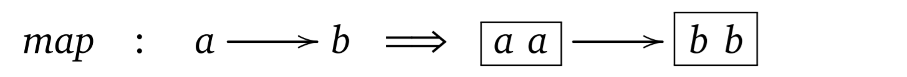
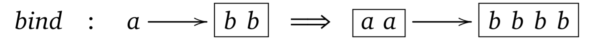
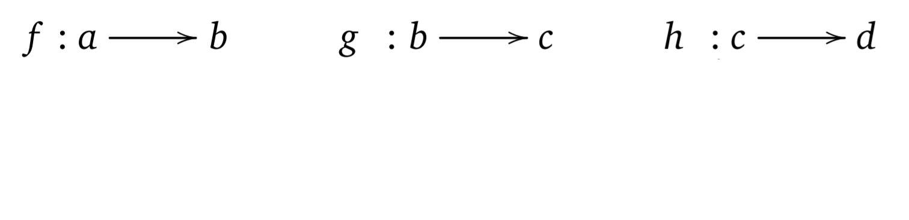
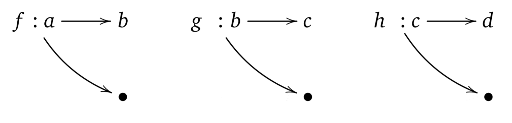
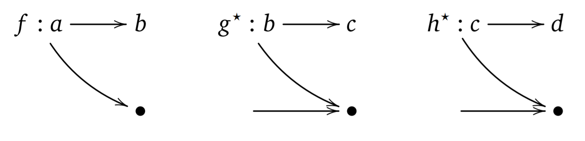
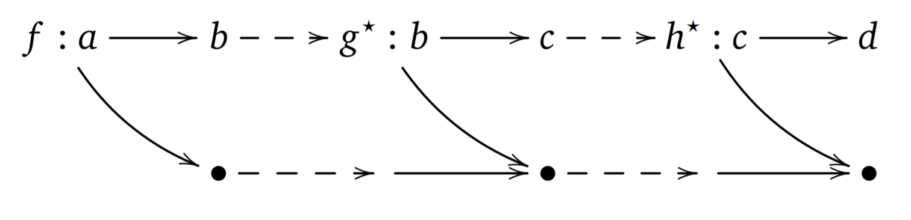
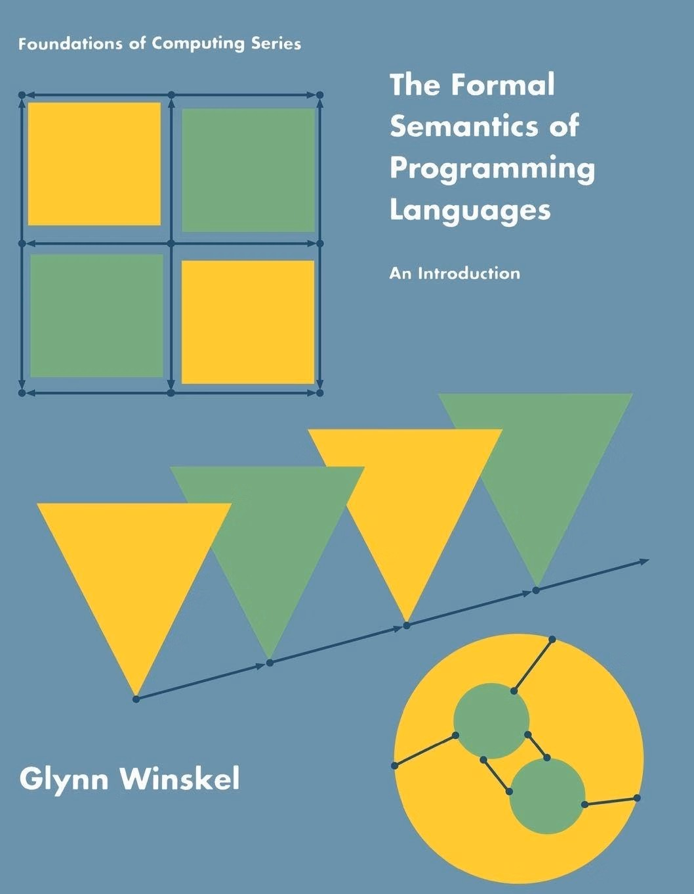
Reasoning about partial functions that may fail or may not terminate
Defines category of
partial functions
Dana Scott's domain-theoretic models & LCF
Language semantics
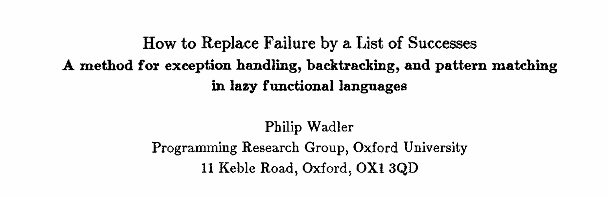
[ a + b | a <- foo, b <- foo ]flatMap : a list -> (a -> b list) -> b list
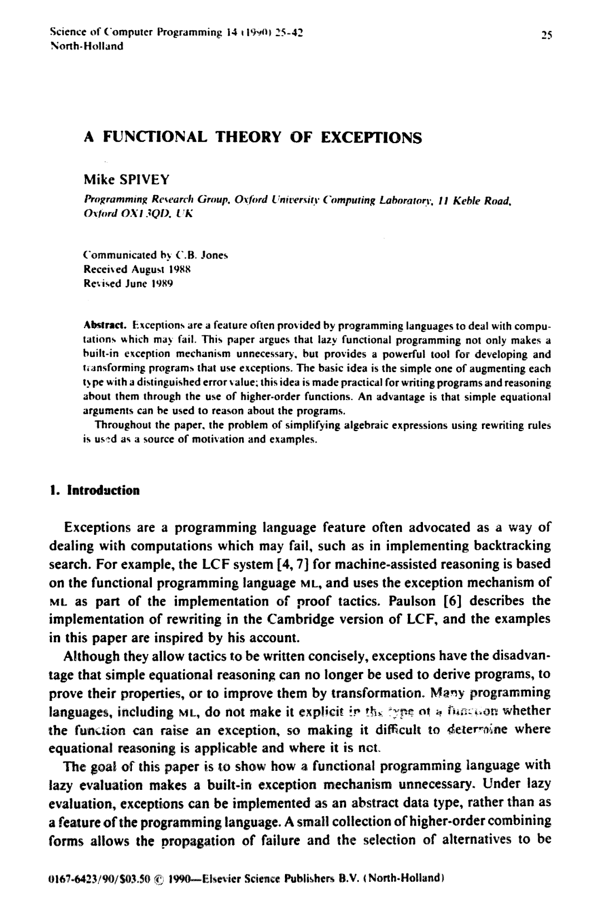
John Cupitt (Kent, 1988, 1989) 14,000 lines of Miranda code
Refined Simon Thompsons interaction combinators
return : a -> interact a
comp : (a -> interact b) -> (interact a -> interact b)
Based on stream-based input/output model (Landin, 1970s)
Dialogue = [Response] -> [Request] (Haskell 1.2, 1985)
Monadic operations but without reference!
Cites discussion with Martin Hyland at PhD defence
Categorical semantics of computation based on monads
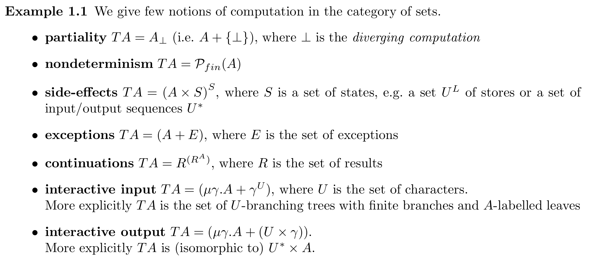
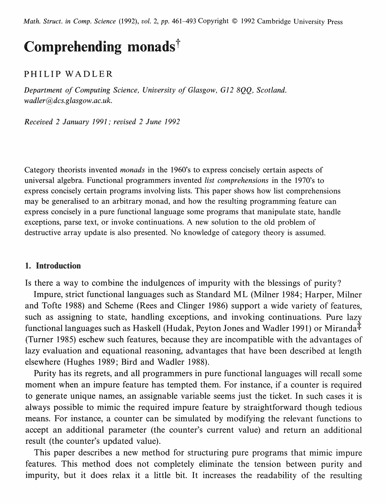
Monads for design
Examples of monads from Moggi - strictness, parsers, state, exceptions, IO
From list comprehensions to monad comprehensions
Join or "container" model
An old canard against functional languages is that they cannot change the world:
They do not "naturally" cope with changes of state, such as altering a location in memory, changing a pixel on a display, or sensing when a key is pressed.
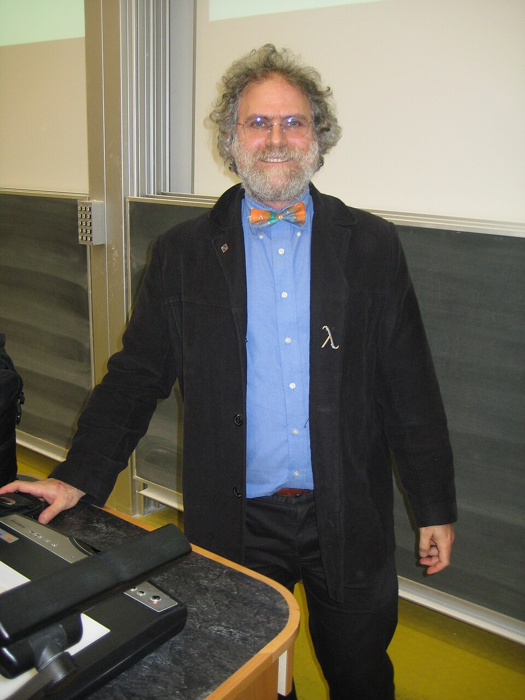
[Response]->[Request] functionWorld and return new World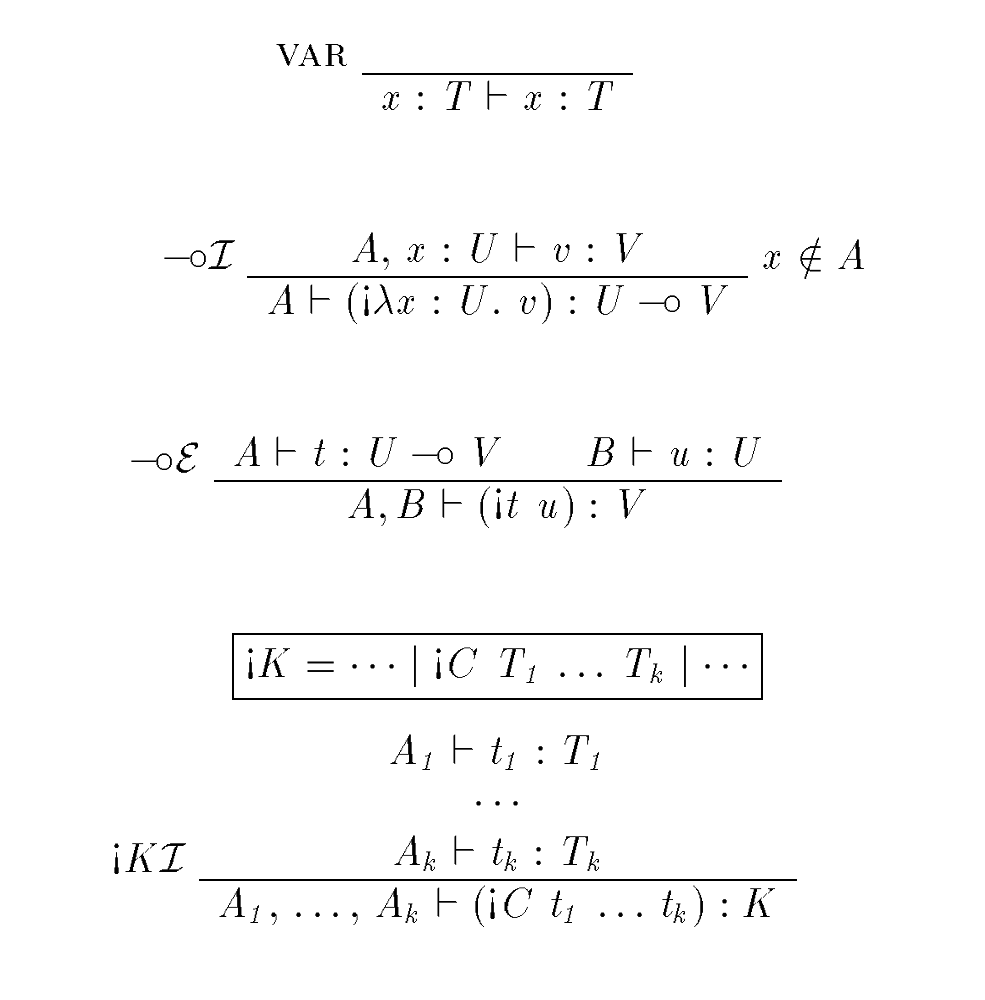
Two operations to rule out!
dup a = (a, a)kill a = ()Type system based on ideas from linear logic
Lot to add to Haskell!
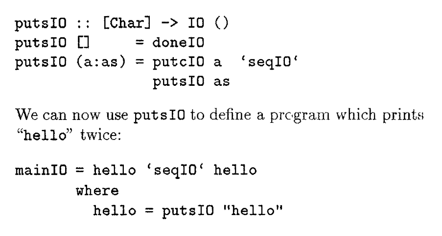
IO a for effectful computationsseqIO : IO () -> IO a -> IO a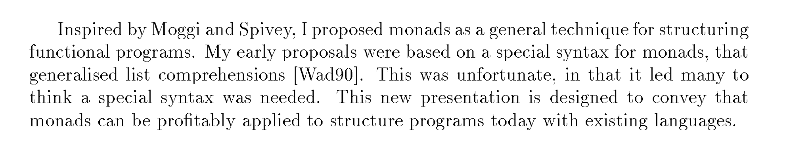
Syntax is not the essence of the idea!
Becomes very useful and important in practice...
Not part of the research programme?
Existed before for lists
Used to handle extras!
[ a + b |
a <- foo
b <- bar ]
Generalized but dropped
Monad as container
Introduced in IO context Launchbury's Gofer (1993)
{ a <- foo;
b <- bar
return (a + b) }
Added to Haskell in 96
Monad as computation
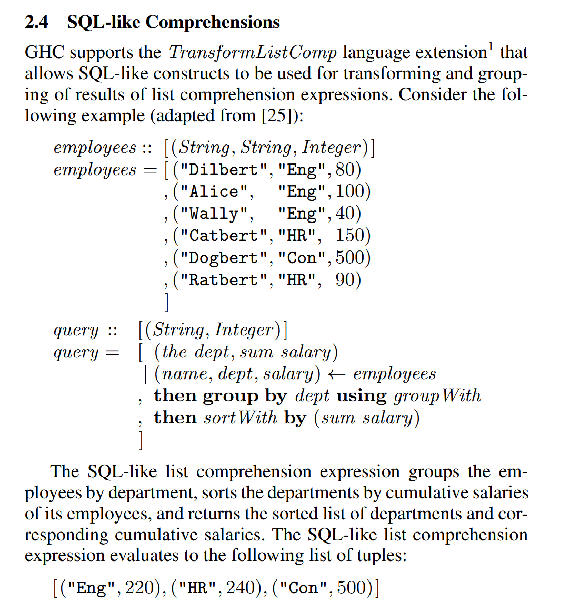
Bringing back monad comprehensions
Requires additional operations: groupWith, filter, zipWith, etc.
Practical motivation, no categorical model!
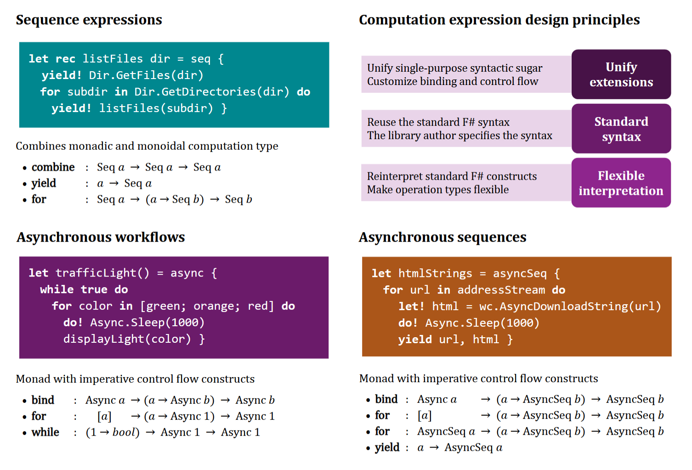
Parser a reads input string and produces value a
Parse one thing and then another thing
Parser a -> Parser b -> Parser (a * b)
Try parsing in two ways, use the first success
Parser a -> Parser a -> Parser a
Parsers can be extended to support
monadic operations >>= and return.
-- Parse array literal
ints :: Parser [Int]
ints =
[ n:ns |
_ <- char ’[’
n <- int
ns <- many nint
_ <- char ’]’]
-- Parse int after comma
nint :: Parser Int
nint =
[ x |
_ <- char ’,’
x <- int ]
Monadic comprehensions helpful for readability!
Variables n and ns in
scope after bound
Useful for IO and other monads, not much here...
flatMapThe normal disadvantages of conventional [monadic] parsers, such as their lack of speed and their poor error reporting are remedied.
The techniques [do not] extend to monadic parsers. [T]he monadic formulation [causes] the evaluation of the parser construction over and over (...).
lift operations through the stack
catch and callcc hard